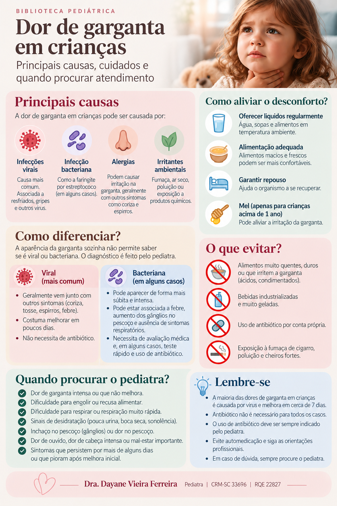

Dor de garganta em crianças
Entenda as causas mais comuns, o que pode aliviar o desconforto e quando a criança precisa ser avaliada.
O que pode causar dor de garganta?
A dor pode ocorrer quando a faringe e/ou as amígdalas ficam inflamadas. Vírus e bactérias estão entre as causas infecciosas. Em quadros virais, é comum a criança também apresentar tosse, coriza, rouquidão ou outros sintomas respiratórios.
Infecção viral
É uma causa frequente e costuma melhorar espontaneamente. Antibióticos não tratam infecções causadas por vírus.
Estreptococo do grupo A
É uma causa bacteriana importante de faringite, principalmente entre 5 e 15 anos. O diagnóstico pode exigir avaliação clínica e, em alguns casos, teste rápido ou cultura da garganta.
Como diferenciar vírus de bactéria?
Não é seguro fazer essa distinção apenas olhando a garganta em casa. Tosse, coriza, rouquidão, conjuntivite ou feridas na boca favorecem uma causa viral. Já febre, início súbito da dor, dor para engolir, gânglios dolorosos no pescoço e amígdalas avermelhadas ou com exsudato podem ocorrer na infecção estreptocócica — mas esses sinais não confirmam sozinhos o diagnóstico.
O que pode ajudar no desconforto?
- Ofereça líquidos com frequência para evitar desidratação.
- Alimentos e líquidos em temperaturas confortáveis podem ser mais fáceis de aceitar.
- Observe se a criança consegue engolir e manter uma ingestão adequada de líquidos.
- Medicamentos para dor ou febre devem ser usados de acordo com a orientação pediátrica e a dose apropriada para a criança.
A dor de garganta aguda frequentemente melhora dentro de aproximadamente uma semana.
E o antibiótico?
Antibióticos não são necessários para todas as dores de garganta. Quando a causa é viral, eles não trazem benefício. Quando há confirmação ou forte suspeita de infecção bacteriana que necessita tratamento, o pediatra define o medicamento e o tempo de uso.
Tratar adequadamente a faringite causada pelo estreptococo do grupo A também é importante para reduzir o risco de algumas complicações, incluindo febre reumática.
Quando procurar atendimento rapidamente?
Procure avaliação médica com prioridade se a criança apresentar:
- dificuldade para respirar;
- dificuldade importante para engolir líquidos ou incapacidade de manter hidratação;
- salivação excessiva associada à dificuldade para engolir;
- prostração importante, sonolência incomum ou piora rápida do estado geral;
- inchaço importante no pescoço, dificuldade para abrir a boca ou alteração importante da voz;
- sinais de desidratação, como redução importante da urina;
- piora significativa ou sintomas que não começam a melhorar no período esperado.
Perguntas frequentes
Placa branca significa bactéria?
Não necessariamente. A aparência da garganta, sozinha, não confirma a causa. A avaliação clínica e, quando indicado, testes ajudam no diagnóstico.
Toda faringite estreptocócica tem tosse?
A tosse é mais sugestiva de infecção viral e geralmente não é característica da faringite estreptocócica clássica.
Quando pode ser necessário um teste?
Quando a avaliação levanta suspeita de estreptococo, o profissional pode indicar teste rápido e/ou cultura de garganta, conforme o caso.
Quanto tempo costuma durar?
Muitos quadros agudos melhoram em cerca de uma semana. Piora rápida ou ausência de melhora merece reavaliação.
Infográfico: dor de garganta em crianças

Fontes e revisão
Conteúdo elaborado a partir de orientações da Sociedade Brasileira de Pediatria (SBP), NICE e Centers for Disease Control and Prevention (CDC).
SBP — Dor de garganta
SBP — Diretriz: Dores comuns em Pediatria
NICE — Sore throat (acute): antimicrobial prescribing
CDC — About Strep Throat
Última revisão: setembro de 2026.